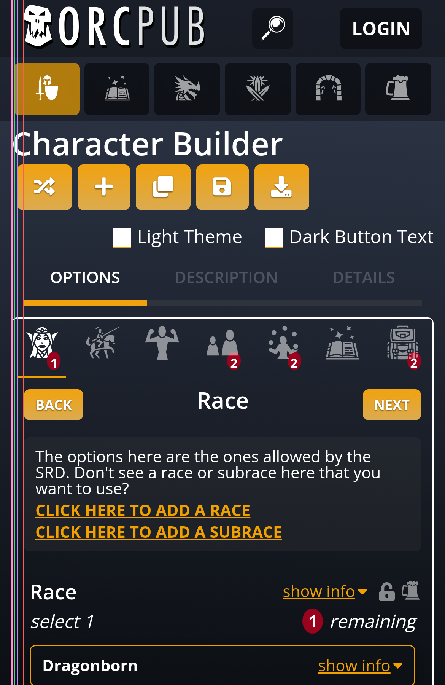
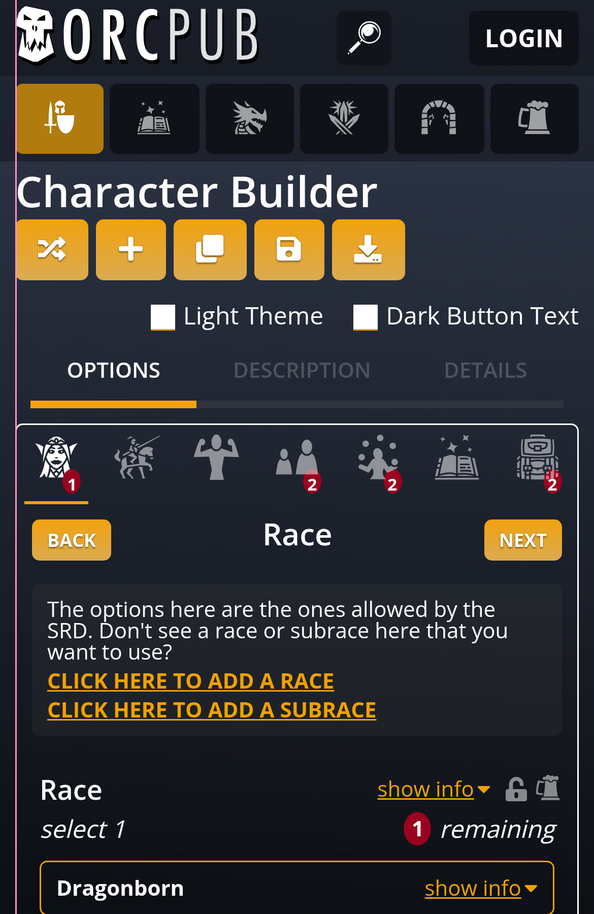
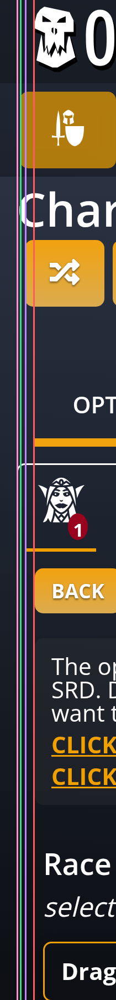
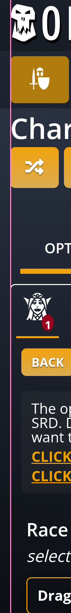

The builder on a 390px phone, dark theme. On the left is the branch as built; on the right is a preview with every left edge on 10px. The preview is CSS injected for the screenshot only; nothing is built yet.
Built: the magnifier is centred in a 36px square, LOGIN is centred in its button, and the two are the same height.
| Logo | Tabs | Title | Buttons | Panel | |
|---|---|---|---|---|---|
| As built | 20px | 12px | 10px | 15px | 10px |
| Preview | 10px | 10px | 10px | 10px | 10px |




The top bar's side padding goes from 20px to 10px, so the logo moves 10px left and LOGIN 10px right. The tab row's margin goes from 10px to 8px, so the tabs' own 2px puts them on 10px. The yellow buttons' row loses 5px, because each button already carries its own 5px.